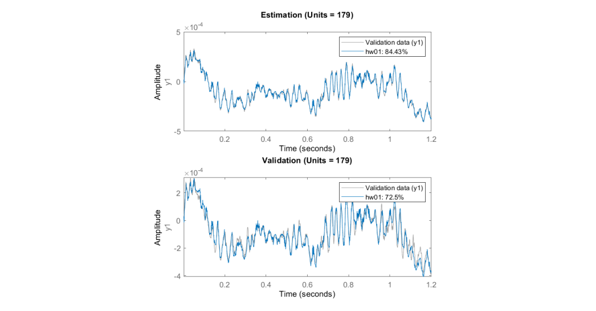

Final Year Project
Nonlinearities and Noise Identification in an Active Suspension System
The aim of this project was to try to identify the nonlinearities in an active suspension system as their presence was proven in a study by Kioutsoukis et al. If these nonlinearities can be identified, they can be reproduced in simulated environments, which can advance the development of active suspension systems in the future. One practical application of this data would be developing a nonlinear compensator with appropriate noise filtering techniques, this could then be integrated into a suspension system and would be able to further improve the performance of that suspension system.
The project's primary method for identification was the Hammerstein-Weiner model, this model consists of three subsystems, where a linear block is embedded between two nonlinear systems. The model works by attempting to model experiemtnal data through the 'nlhw' function in MATLAB, this function can be accessed through the MATLAB System Identification (SysID) Toolbox. As part of the project, I developed a script to automate the testing of different models in the toolbox rather than doing it manually one-by-one. This script would then export the data from hundreds of different models to a spreadsheet where I could analysis the data in more detail in needed. . However, direct comparison of this model with the experimental data revealed an inability to capture certain high-frequency components that the experimental data had. This discrepancy would suggest that an amendment needs to be taken to the original hypothesis, in addition to the linear, nonlinear and noise component, there is an additional high frequency component that has not yet been identified.
Six different nonlinear blocks were used to generate many models which were then compared against the experimental data collected. The initial hypothesis was that the experimental data comprised of a linear component, a nonlinear component and some noise component. Upon analysing the results, particularly those pertaining to the model generated with sigmoid network blocks, combined with a moving average filter, a model was developed that replicated some of the trends observed in the original experimental data.
Although the project did not fully achieve its objectives, the work detailed in this report does provide a good foundation for future work and has made some progress in understanding what the experimental data is made up of. Unfortunately, the problem was more complex than initially expected meaning that it could not be completed in the time frame allocated to this project.